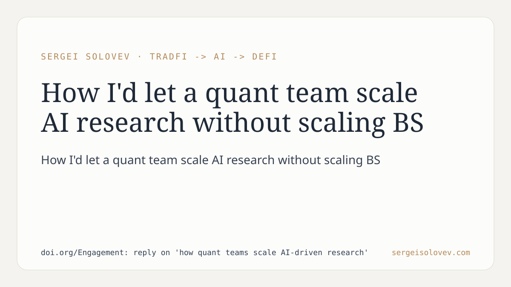

Most quant teams I talk to are adding AI layers faster than they can evaluate whether those layers actually help. The question worth asking: how do you scale AI research without scaling the ratio of untested hypotheses to real results?
The paper addresses this directly. The core finding is disciplinary rather than technical: one ML tier was retracted after walk-forward testing showed it did not beat the simpler rule it was supposed to replace. That decision — pulling something that looked good in-sample — is where most teams fail. The structural answer proposed is treating evaluation infrastructure as the primary moat, not model sophistication.
In practice this means the bottleneck is not GPU budget or model choice. It is the rigor of the feedback loop between hypothesis and evidence. Teams that skip this step accumulate a portfolio of strategies that overfit to backtest windows and underperform in production.
The method is the thesis: if you cannot confidently retract a model tier that underperforms a naive baseline, your research process is not scaling — it is drifting.
https://doi.org/Engagement: reply on 'how quant teams scale AI-driven research'
#QuantFinance #ML #AIagents